Tweety@Web
Inconsistency Measurement - Technical DocumentationServer status: |
|
|
This page provides some formal background to the theory of inconsistency measurement and lists the definitions of all currently supported inconsistency measures in "Tweety@Web - Inconsistency Measurement". Currently, the following inconsistency measures are supported: The above list is continuously being extended. If your favorite measure is not yet in this list, please drop me a line (matthias@mthimm.de) and I will add it. |
|
Formal preliminaries |
|
|
Let A knowledge base Semantics to Inconsistency measures are functions There are some core notions that are essentiell for most inconsistency measures which we will recall now. Let 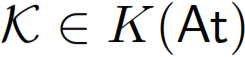 be some knowledge base.
A set A formula We adopt the following definition of a (basic) inconsistency measure from [Grant:2011]. A basic inconsistency measure is a function
The first property (also called consistency) of a basic inconsistency measure ensures that all consistent knowledge bases receive a minimal inconsistency value and every inconsistent knowledge base receive a positive inconsistency value. The second property (also called monotony) states that the value of inconsistency can only increase when adding new information. The third property (also called free formula independence) states that removing harmless formulas from a knowledge base, i.e., formulas that do not contribute to the inconsistency, does not change the value of inconsistency. If 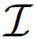 is a basic inconsistency measure and is a knowledge base we say that |
|
Inconsistency Measures |
|
Literature |
|
|
[Priest:1979] Priest, G., 1979. Logic of Paradox. Journal of Philosophical Logic 8, 219-241. [Knight:2002] Knight, K. M., 2002. A theory of inconsistency. Ph.D. thesis, University Of Manchester. [Doder:2010] Dragan Doder, Miodrag Raskovic, Zoran Markovic, Zoran Ognjanovic. Measures of inconsistency and defaults. In International Journal of Approximate Reasoning, 51:832-845. 2010. [Hunter:2010] Anthony Hunter, Sebastien Konieczny. On the measure of conflicts: Shapley Inconsistency Values. In Artificial Intelligence, 174(14):1007-1026. July 2010. [Grant:2011] Grant, J., Hunter, A., 2011. Measuring consistency gain and information loss in stepwise inconsistency resolution. In: Proc. of the 11th European Conference on Symbolic and Quantitative Approaches to Reasoning with Uncertainty (ECSQARU 2011). pp. 362-373. [Mu:2011a] Kedian Mu, Weiru Liu, Zhi Jin, David Bell. A syntax-based approach to measuring the degree of inconsistency for belief bases. In International Journal of Approximate Reasoning. 2011. [Xiao:2012] Guohui Xiao, Yue Ma. Inconsistency Measurement based on Variables in Minimal Unsatisfiable Subsets. In Proceedings of the 20th European Conference on Artificial Intelligence (ECAI'12). 2012. [Grant:2013] J. Grant, A. Hunter. Distance-based Measures of Inconsistency. In Proceedings of the 12th Europen Conference on Symbolic and Quantitative Approaches to Reasoning with Uncertainty (ECSQARU'13), pages 230-241, Springer, volume of Lecture Notes in Computer Science. 2013. [Jabbour:2013] Jabbour, Said, Raddaoui, Badran. Measuring Inconsistency Through Minimal Proofs. In Proceedings of the 12th European Conference on Symbolic and Quantitative Approaches to Reasoning with Uncertainty, pages 290-301, Springer-Verlag, volume of ECSQARU'13. 2013. [Thimm:2014d] Matthias Thimm. Towards Large-scale Inconsistency Measurement. In Proceedings of the 37th German Conference on Artificial Intelligence (KI'14). Stuttgart, Germany, September 2014. [Ammoura:2015] Meriem Ammoura, Badran Raddaoui, Yakoub Salhi, Brahim Oukacha. On Measuring Inconsistency Using Maximal Consistent Sets. In Proceedings of the 13th European Conference on Symbolic and Quantitative Approaches to Reasoning with Uncertainty (ECSQARU'15), pages 267-276, 2015. |
|
| Last updated 05.06.2014, Matthias Thimm | |
 be a propositional signature, i.e., a (finite) set of propositions, and let
be a propositional signature, i.e., a (finite) set of propositions, and let  be the corresponding propositional language constructed using the usual connectives (and), (or), and (negation). The special symbols 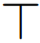 and 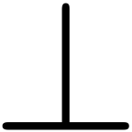 are used to denote tautology and contradiction, respectively.
be the corresponding propositional language constructed using the usual connectives (and), (or), and (negation). The special symbols 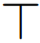 and 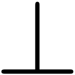 are used to denote tautology and contradiction, respectively. is a finite set of formulas
is a finite set of formulas  . Let 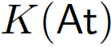 be the set of all knowledge bases wrt. to the signature
. Let 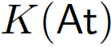 be the set of all knowledge bases wrt. to the signature  , denoted by
, denoted by  (or 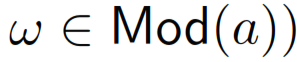, if and only if 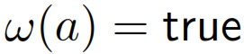. Both
(or 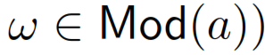, if and only if 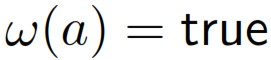. Both  and 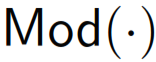 are extended to arbitrary formulas, sets, and knowledge bases as usual. A knowledge base
and 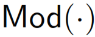 are extended to arbitrary formulas, sets, and knowledge bases as usual. A knowledge base  and consistent otherwise. Furthermore, for every interpretation it holds that 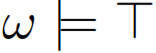 and
and consistent otherwise. Furthermore, for every interpretation it holds that 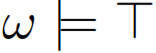 and  .
Two formulas
.
Two formulas  and
and  are equivalent, denoted by 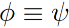, if and only if 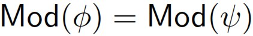.
are equivalent, denoted by 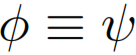, if and only if 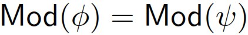. that aim at assessing the severity of the inconsistency in a knowledge base
that aim at assessing the severity of the inconsistency in a knowledge base  . However, inconsistency is a concept that is not easily quantified and there have been a couple of proposals for inconsistency measures so far, see the list literature on this page.
. However, inconsistency is a concept that is not easily quantified and there have been a couple of proposals for inconsistency measures so far, see the list literature on this page. is called minimal inconsistent subset (
is called minimal inconsistent subset (  ) of
) of  and there is no 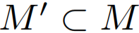. Let
and there is no 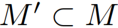. Let  be the set of all minimal inconsistent subsets of
be the set of all minimal inconsistent subsets of  .
. is called free formula of
is called free formula of  denote the set of all free formulas of
denote the set of all free formulas of  that satisfies the following three conditions:
that satisfies the following three conditions: if and only if
if and only if  then
then  , and
, and we have
we have  .
.